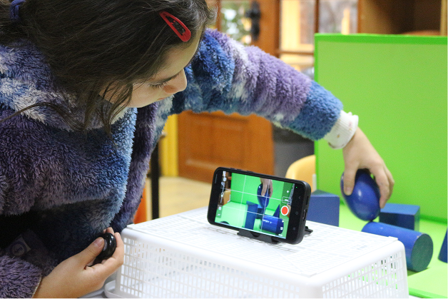
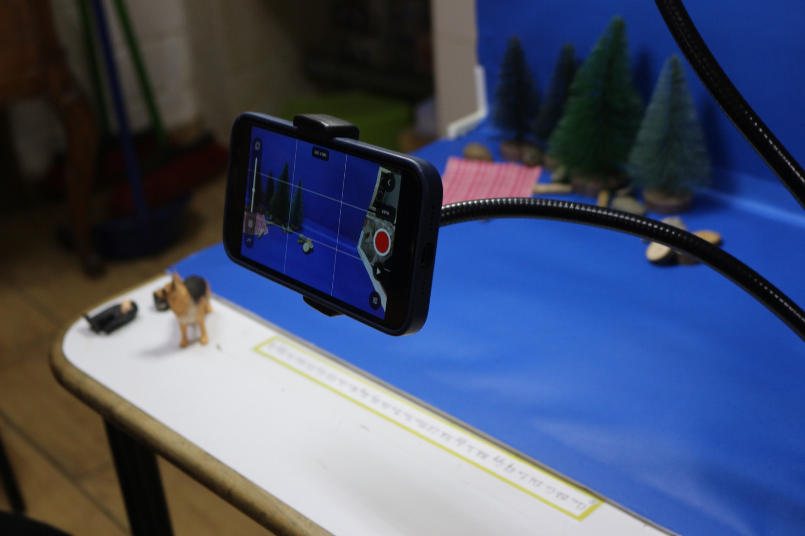

Pedagogía de la paciencia
Cada segundo requiere pensar, ajustar y volver a intentar. Los niños comprenden el valor del proceso por sobre el resultado instantáneo.

Convertimos las tablets y celulares del colegio en estaciones de animación cuadro a cuadro: seguras, sin internet y pensadas para un curso completo.
Funciona mejor en un teléfono o tablet Android con Chrome · Prototipo v0.1.0

La recompensa inmediata desplaza la exploración, la paciencia y la concentración que exige crear algo propio.
Aumenta la proporción de lectores apresurados que responden rápido, pero con menor precisión, entre 2018 y 2025.
Horas destinadas al entretenimiento digital, donde predomina el consumo pasivo por sobre la creación.
La regulación del uso de celulares personales plantea un nuevo desafío para los colegios: ¿cómo integrar la tecnología al aprendizaje sin depender de los dispositivos de cada estudiante? Esto abre la necesidad de implementar entornos tecnológicos propios, accesibles y gestionables, como laboratorios móviles basados en tablets institucionales. Pero no basta con disponer de equipos: también se necesitan herramientas diseñadas para crear, aprender y colaborar en grupo.
Facilitar la enseñanza y experimentación de la animación cuadro a cuadro en contextos educativos, promoviendo el pensamiento creativo, la expresión artística y el uso significativo de la tecnología. Niños y niñas de 8 a 12 años crean solos o en grupo mientras el docente acompaña el proceso de cada uno.
El docente proyecta un QR y las tablets se unen en segundos.
Modo kiosco: sin salir a otras apps y sin publicidad.
Solos o en equipo, con roles y sin internet.
Docente y UTP ven el avance de cada estudiante.
Animar cuadro a cuadro es el antídoto contra la inmediatez: exige paciencia, observación y criterio para construir una historia segundo a segundo, convirtiendo el aula en un taller interdisciplinario vivo.

Cada segundo requiere pensar, ajustar y volver a intentar. Los niños comprenden el valor del proceso por sobre el resultado instantáneo.
Nadie anima solo: unos modelan, otros iluminan, dirigen la cámara o animan. Cada estudiante asume un rol activo dentro del equipo.
Se integra de forma natural en Lenguaje, Artes, Ciencias o Historia, acercando los medios digitales y las TIC en su justa medida como herramientas de creación.
Un sector en auge que forma profesionales en la universidad, pero aún no tiene herramientas para impulsar la creatividad desde la infancia dentro del colegio.
del PIB de Chile viene de las industrias creativas.
empleos genera el sector en el país.
«Historia de un Oso» (2016): la animación chilena compite en el mundo.
La cámara y el editor existen en muchas apps. Nosotros construimos lo que falta para que funcionen con 30 niños, en cinco componentes propios.
Trabajo en clase y en casa con conexión intermitente, sin perder un cuadro.
Segura para menores y alineada con la Ley 21.719: apodo, avatar y clave de imágenes.
Fija las tablets desde el celular del docente, sin soporte técnico.
Autoría de cada cuadro, versión y rol, convertida en trazabilidad.
Iteraciones y correcciones convertidas en datos para el docente y la UTP.
No automatizamos la creatividad con IA. Quitamos las barreras técnicas sin quitarle al niño la experiencia de crear.

Cada paso validó tanto la metodología con niños como el interés institucional de colegios y universidades por llevar BlackQuack a la sala.
32 sesiones semanales con 15 niños de 8 a 12 años usando solo 2 celulares. La lista de espera duplicó los cupos y recaudó $3,0 M, confirmando disposición real a pagar.
Los estudiantes exhibieron sus cortometrajes ante el público y jurado del Festival Internacional de Animación, validando la calidad narrativa y técnica lograda en el aula.
Tras conocer los resultados en FIDA, equipos directivos y docentes solicitaron probar el prototipo funcional en sus establecimientos:
Respaldo formal de su dirección para acceder a laboratorios de stop motion y prototipado, pruebas de usabilidad con estudiantes de Diseño y espacios de exhibición escolar.
Colegio Montessori Yerpún renovó su compromiso para 2027, esta vez ejecutando el programa completo sobre la plataforma BlackQuack Studio.
Durante un año escolar completo observamos sin filtros cómo crean los niños en sala (una hora semanal, de abril a noviembre). Usamos herramientas comerciales como línea base para depurar tiempos, roles y apoyos antes de programar cada función de BlackQuack.
Registro del proceso en aula: modelado, captura cuadro a cuadro y trabajo en equipo.
de taller real durante todo el año escolar.
creando en equipo con apenas 2 celulares.
de interés: lista de espera duplicó los cupos.
recaudados ($25.000/mes × 15 niños × 8 meses).
| Talleres / robótica | Stop Motion Studio | BlackQuack | |
|---|---|---|---|
| Escala sin sumar personas | |||
| Sala por QR y tablets fijadas | |||
| Grupos con registro de quién hizo qué | |||
| Panel docente y reporte UTP | |||
| Metodología con currículum chileno | Parcial | En inglés | |
| Código escolar: sigue fuera de clase | |||
| Venta a colegios y soporte en español |
SaaS B2B con licencia anual por colegio, sin hardware ni instalación. Docentes y estudiantes no pagan.
Redes y SLEP: cotización por volumen, desde $2.000 por estudiante. Capacitación docente aparte. Plan Personal pago: $2.990 al mes.
| Horizonte | Colegios | Ingreso anual | Motor |
|---|---|---|---|
| Año 1 | 5 | CLP 2,0 M | Colegios fundadores en Valparaíso |
| Año 2 | 30 | CLP 23,7 M | Redes de colegios y flujo 7.° a 4.° medio |
| Año 5 | 300 | CLP 237 M | SLEP, módulos y Latinoamérica |
En el escenario ambicioso, el año 5 llega a 900 colegios y cerca de CLP 990 M anuales. Margen bruto objetivo sobre 85%. Las cifras se validan en BUILD.
Tenemos dónde pilotear, las industrias creativas están en auge, la animación chilena ganó un Oscar y la Ley 21.801 empuja a usar los equipos del colegio.
El problema es global. Sin hardware, con implementación remota y un currículum que se carga como dato: adaptar a otro país no exige reprogramar.

Líder del proyecto y CEO

Cofundador, CPO y líder técnico
Karen y Paulo trabajan juntos desde 2020.